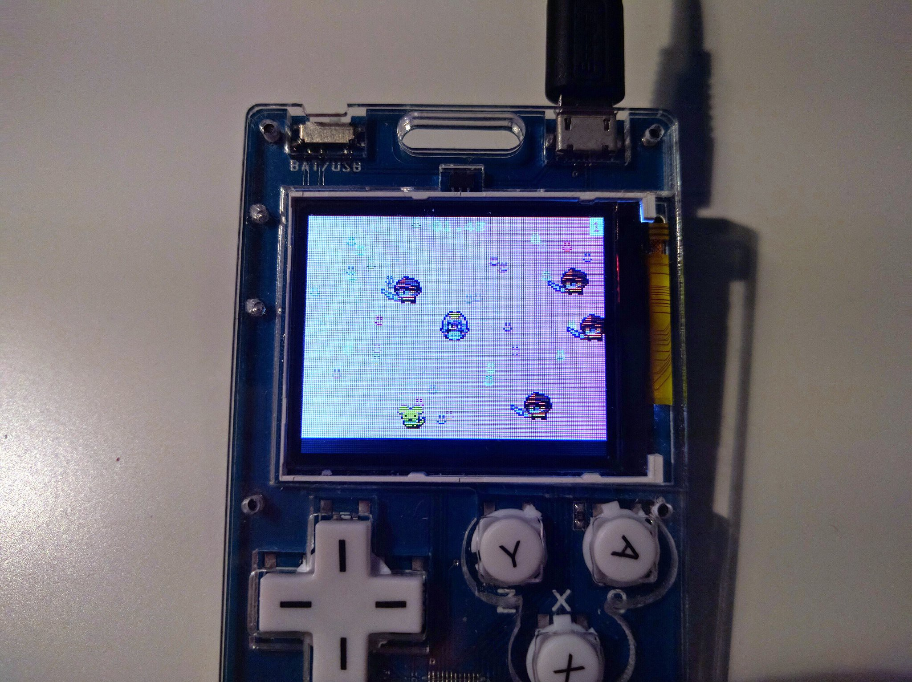

Microsoft MakeCode Arcade¶
Published on 2019-12-26 in PewPew M4.
While designing this, I kept my eye on the MakeCode Arcade specifications to make sure the device could also be used with that platform. But I never really took the time to test it. Today I finally decided to see if it will work.
I updated the bootloader configuration to include information about all the buttons on the device, and I picked one of the examples to run. And lo and behold, it works:
After such a meticulous and throughout test, I decided it’s time to add it officially, so I made a pull request to the uf2-samdx1 repository to add the bootloader configuration there (and had to sign a CLA, thank you Microsoft), and also I dropped the Arcade staff an e-mail asking for adding it to the website. We will see what they think about it.